Model Development Document · version 1.1.0
· trained 2026-09-08
· champion form: scorecard
Probability that a delinquent account makes NO material payment in the next cycle. Behaviour scorecard: WOE + logistic regression, with a gradient-boosting challenger. Feeds the allocator's expected-recovery term and the manager priority surfaces.
ml/pipeline/config.py.| gate | observed | threshold | result |
|---|---|---|---|
| gini_min | 0.5136 | >= 0.25 | PASS |
| gini_in_target_band | 0.5136 | 0.35-0.55 | PASS |
| gini_not_suspicious | 0.5136 | < 0.6 | PASS |
| ks_min | 39.7200 | >= 20.0 | PASS |
| ks_not_suspicious | 39.7200 | < 60.0 | PASS |
| rank_order_breaks_total | 0.0000 | <= 1 | PASS |
| rank_order_breaks_top5 | 0.0000 | <= 0 | PASS |
| top_decile_lift_capture | 0.9563 | >= 0.55 (of max 1.394x) | PASS |
| top_decile_lift_not_suspicious | 0.9563 | < 0.995 | PASS |
| train_test_gini_gap | -0.0279 | < 0.1 | PASS |
| max_feature_psi | 0.0111 | < 0.25 | PASS |
| min_segment_gini | 0.4872 | >= 0.2 | PASS |
| Rows (train / validation / out-of-time) | 70,000 / 20,000 / 30,000 |
| Periods — train | 0 to 13 |
| Periods — out-of-time | 18 to 23 |
| Bad rate (train / oot) | 0.6915 / 0.7175 |
| Source rows | 120,000 |
| Distinct accounts | 16,075 |
| Training data hash | da17802978062d3d |
| Dataset fingerprint | 12db1e5b31f4be5f |
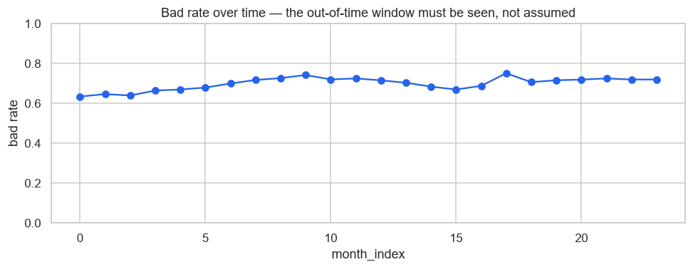
Bad rate by period. The out-of-time window sits at the right.
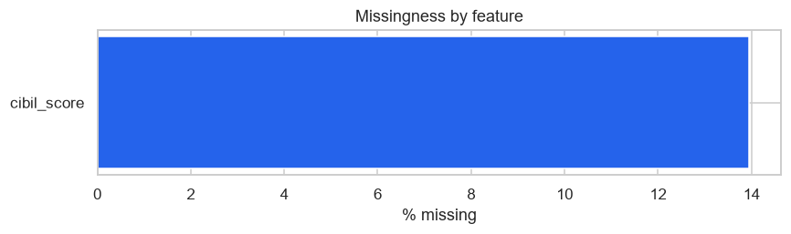
Missing by feature. Missing is never imputed — it becomes its own WOE bin.
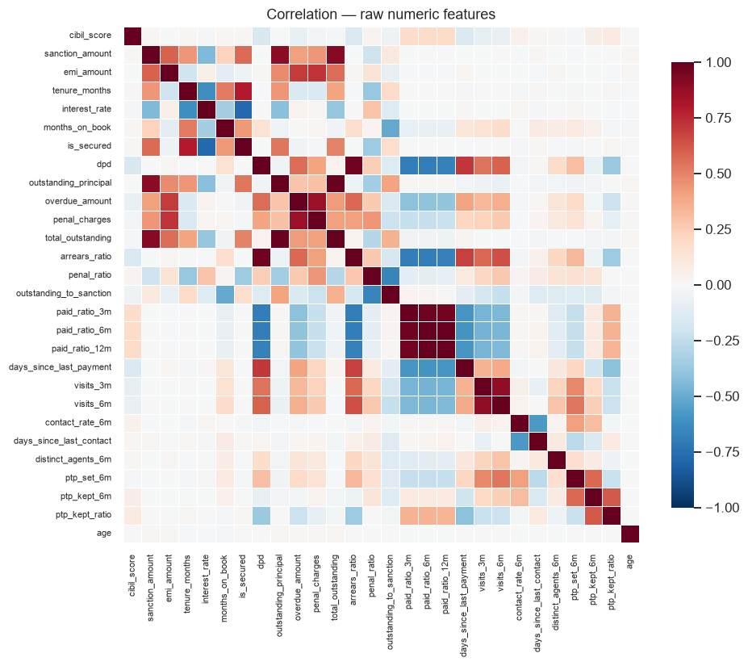
Raw numeric correlation.
| feature | type | n | missing_pct | unique | mean | std | p1 | p50 | p99 | mode | mode_share |
|---|---|---|---|---|---|---|---|---|---|---|---|
| cibil_score | numeric | 70,000 | 13.9400 | 460 | 633.1678 | 77.0706 | 459.0000 | 634.0000 | 808.0000 | ||
| sanction_amount | numeric | 70,000 | 0.0000 | 486 | 77,292.3571 | 92,208.4852 | 15,000.0000 | 46,000.0000 | 460,000.0000 | ||
| emi_amount | numeric | 70,000 | 0.0000 | 4,348 | 2,209.7301 | 2,179.0675 | 328.0000 | 1,528.0000 | 11,132.0000 | ||
| tenure_months | numeric | 70,000 | 0.0000 | 10 | 64.0171 | 64.3176 | 12.0000 | 36.0000 | 240.0000 | ||
| interest_rate | numeric | 70,000 | 0.0000 | 1,717 | 14.3756 | 4.3917 | 7.0000 | 14.6200 | 23.6700 | ||
| months_on_book | numeric | 70,000 | 0.0000 | 249 | 23.3195 | 33.6060 | 1.0000 | 11.0000 | 176.0000 | ||
| is_secured | numeric | 70,000 | 0.0000 | 2 | 0.3307 | 0.4705 | 0.0000 | 0.0000 | 1.0000 | ||
| dpd | numeric | 70,000 | 0.0000 | 488 | 78.0922 | 80.2365 | 0.0000 | 60.0000 | 330.0000 | ||
| outstanding_principal | numeric | 70,000 | 0.0000 | 33,427 | 52,892.1330 | 75,920.8865 | 2,028.3190 | 27,541.2000 | 375,194.9155 | ||
| overdue_amount | numeric | 70,000 | 0.0000 | 20,528 | 7,777.8288 | 11,814.1643 | 435.0000 | 4,124.0000 | 54,088.0500 | ||
| penal_charges | numeric | 70,000 | 0.0000 | 1,782 | 205.7175 | 302.9352 | 11.0000 | 116.0000 | 1,348.0000 | ||
| total_outstanding | numeric | 70,000 | 0.0000 | 66,075 | 60,875.6793 | 80,090.8989 | 4,696.1675 | 34,958.1250 | 399,035.9295 | ||
| arrears_ratio | numeric | 70,000 | 0.0000 | 9,915 | 3.4855 | 2.6227 | 0.8780 | 2.7790 | 11.7320 | ||
| penal_ratio | numeric | 70,000 | 0.0000 | 616 | 0.0054 | 0.0067 | 0.0003 | 0.0034 | 0.0304 | ||
| outstanding_to_sanction | numeric | 70,000 | 0.0000 | 998 | 0.6545 | 0.2639 | 0.0710 | 0.7080 | 0.9910 | ||
| paid_ratio_3m | numeric | 70,000 | 0.0000 | 1,000 | 0.3330 | 0.3242 | 0.0000 | 0.2770 | 1.0000 | ||
| paid_ratio_6m | numeric | 70,000 | 0.0000 | 1,001 | 0.3452 | 0.3112 | 0.0000 | 0.3180 | 1.0000 | ||
| paid_ratio_12m | numeric | 70,000 | 0.0000 | 1,001 | 0.3510 | 0.3070 | 0.0000 | 0.3290 | 1.0000 | ||
| days_since_last_payment | numeric | 70,000 | 0.0000 | 480 | 71.5646 | 73.9022 | 1.0000 | 43.0000 | 321.0000 | ||
| visits_3m | numeric | 70,000 | 0.0000 | 4 | 1.2081 | 1.0777 | 0.0000 | 1.0000 | 3.0000 | ||
| visits_6m | numeric | 70,000 | 0.0000 | 7 | 1.7902 | 1.7268 | 0.0000 | 1.0000 | 6.0000 | ||
| contact_rate_6m | numeric | 70,000 | 0.0000 | 14 | 0.5062 | 0.3209 | 0.0000 | 0.4500 | 1.0000 | ||
| days_since_last_contact | numeric | 70,000 | 0.0000 | 441 | 67.2423 | 61.7240 | 1.0000 | 49.0000 | 284.0000 | ||
| distinct_agents_6m | numeric | 70,000 | 0.0000 | 5 | 1.2285 | 0.5053 | 1.0000 | 1.0000 | 3.0000 | ||
| ptp_set_6m | numeric | 70,000 | 0.0000 | 7 | 0.3859 | 0.6717 | 0.0000 | 0.0000 | 3.0000 | ||
| ptp_kept_6m | numeric | 70,000 | 0.0000 | 5 | 0.1402 | 0.3950 | 0.0000 | 0.0000 | 2.0000 | ||
| ptp_kept_ratio | numeric | 70,000 | 0.0000 | 9 | 0.4638 | 0.2593 | 0.0000 | 0.5000 | 1.0000 | ||
| age | numeric | 70,000 | 0.0000 | 51 | 38.2118 | 9.6230 | 21.0000 | 38.0000 | 61.0000 | ||
| loan_type | categorical | 70,000 | 0.0000 | 8 | PERSONAL | 0.2508 | |||||
| dpd_bucket | categorical | 70,000 | 0.0000 | 5 | NPA | 0.3354 | |||||
| city | categorical | 70,000 | 0.0000 | 5 | Delhi | 0.3005 | |||||
| employment_type | categorical | 70,000 | 0.0000 | 5 | SALARIED | 0.4433 | |||||
| branch_code | categorical | 70,000 | 0.0000 | 18 | BR018 | 0.0600 |
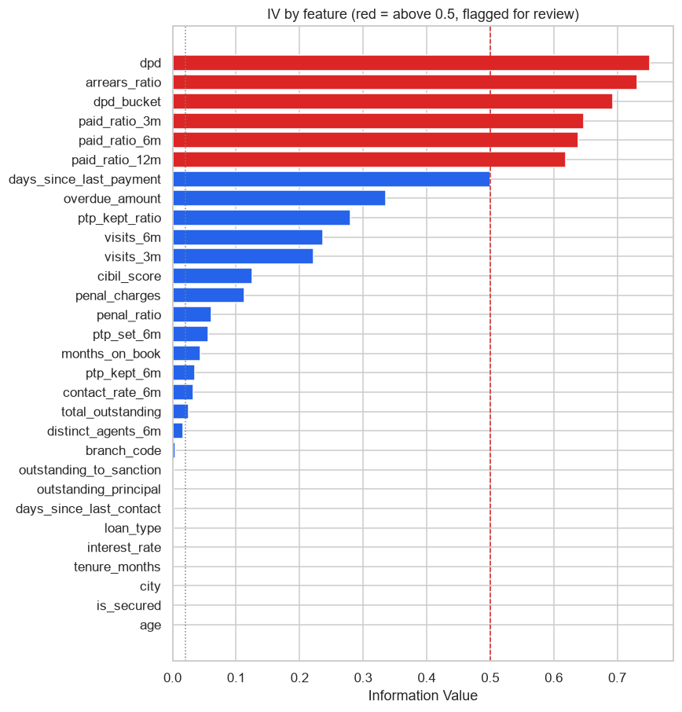
| feature | iv | strength | n_bins | monotonic | leakage_suspect |
|---|---|---|---|---|---|
| dpd | 0.7512 | suspicious | 6 | True | True |
| arrears_ratio | 0.7314 | suspicious | 6 | True | True |
| dpd_bucket | 0.6930 | suspicious | 5 | True | True |
| paid_ratio_3m | 0.6472 | suspicious | 6 | True | True |
| paid_ratio_6m | 0.6388 | suspicious | 6 | True | True |
| paid_ratio_12m | 0.6192 | suspicious | 6 | True | True |
| days_since_last_payment | 0.5000 | suspicious | 6 | True | True |
| overdue_amount | 0.3361 | strong | 6 | True | False |
| ptp_kept_ratio | 0.2798 | medium | 3 | True | False |
| visits_6m | 0.2374 | medium | 6 | True | False |
| visits_3m | 0.2224 | medium | 4 | True | False |
| cibil_score | 0.1260 | medium | 6 | True | False |
| penal_charges | 0.1127 | medium | 6 | True | False |
| penal_ratio | 0.0615 | weak | 6 | True | False |
| ptp_set_6m | 0.0562 | weak | 3 | True | False |
| months_on_book | 0.0438 | weak | 6 | True | False |
| ptp_kept_6m | 0.0358 | weak | 2 | True | False |
| contact_rate_6m | 0.0331 | weak | 3 | True | False |
| total_outstanding | 0.0251 | weak | 5 | True | False |
| distinct_agents_6m | 0.0161 | unpredictive | 2 | True | False |
| branch_code | 0.0037 | unpredictive | 6 | True | False |
| outstanding_to_sanction | 0.0021 | unpredictive | 4 | True | False |
| outstanding_principal | 0.0020 | unpredictive | 2 | True | False |
| days_since_last_contact | 0.0017 | unpredictive | 2 | True | False |
| loan_type | 0.0014 | unpredictive | 6 | True | False |
| interest_rate | 0.0012 | unpredictive | 6 | True | False |
| tenure_months | 0.0009 | unpredictive | 3 | True | False |
| city | 0.0005 | unpredictive | 5 | True | False |
| age | 0.0002 | unpredictive | 3 | True | False |
| is_secured | 0.0002 | unpredictive | 2 | True | False |
| employment_type | 0.0001 | unpredictive | 5 | True | False |
| sanction_amount | 0.0001 | unpredictive | 3 | True | False |
| emi_amount | 0.0000 | unpredictive | 1 | True | False |
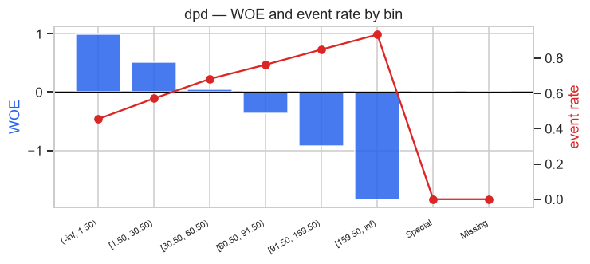
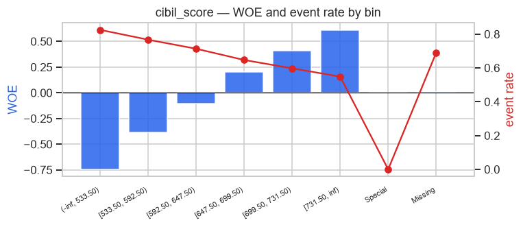
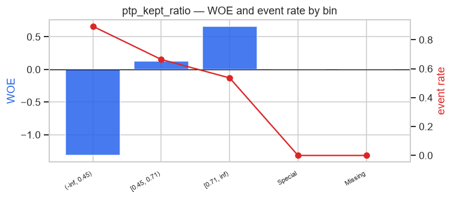
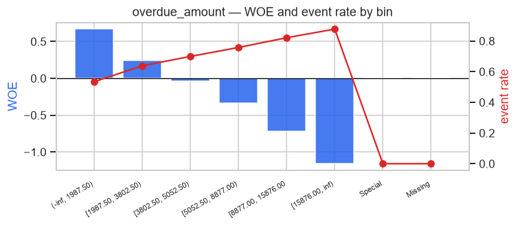
| feature | Bin | Count | Count (%) | Non-event | Event | Event rate | WoE | IV | JS |
|---|---|---|---|---|---|---|---|---|---|
| cibil_score | (-inf, 533.50) | 5,905 | 0.0844 | 1,032 | 4,873 | 0.8252 | -0.7451 | 0.0394 | 0.0048 |
| cibil_score | [533.50, 592.50) | 12,252 | 0.1750 | 2,856 | 9,396 | 0.7669 | -0.3837 | 0.0237 | 0.0029 |
| cibil_score | [592.50, 647.50) | 16,305 | 0.2329 | 4,673 | 11,632 | 0.7134 | -0.1048 | 0.0025 | 0.0003 |
| cibil_score | [647.50, 699.50) | 13,837 | 0.1977 | 4,887 | 8,950 | 0.6468 | 0.2021 | 0.0084 | 0.0010 |
| cibil_score | [699.50, 731.50) | 5,520 | 0.0789 | 2,221 | 3,299 | 0.5976 | 0.4115 | 0.0143 | 0.0018 |
| cibil_score | [731.50, inf) | 6,423 | 0.0918 | 2,900 | 3,523 | 0.5485 | 0.6125 | 0.0377 | 0.0046 |
| cibil_score | Special | 0 | 0.0000 | 0 | 0 | 0.0000 | 0.0000 | 0.0000 | 0.0000 |
| cibil_score | Missing | 9,758 | 0.1394 | 3,026 | 6,732 | 0.6899 | 0.0075 | 0.0000 | 0.0000 |
| cibil_score | 70,000 | 1.0000 | 21,595 | 48,405 | 0.6915 | 0.1260 | 0.0155 | ||
| sanction_amount | (-inf, 20500.00) | 12,941 | 0.1849 | 3,967 | 8,974 | 0.6935 | -0.0092 | 0.0000 | 0.0000 |
| sanction_amount | [20500.00, 129500.00) | 46,026 | 0.6575 | 14,175 | 31,851 | 0.6920 | -0.0024 | 0.0000 | 0.0000 |
| sanction_amount | [129500.00, inf) | 11,033 | 0.1576 | 3,453 | 7,580 | 0.6870 | 0.0209 | 0.0001 | 0.0000 |
| sanction_amount | Special | 0 | 0.0000 | 0 | 0 | 0.0000 | 0.0000 | 0.0000 | 0.0000 |
| sanction_amount | Missing | 0 | 0.0000 | 0 | 0 | 0.0000 | 0.0000 | 0.0000 | 0.0000 |
| sanction_amount | 70,000 | 1.0000 | 21,595 | 48,405 | 0.6915 | 0.0001 | 0.0000 | ||
| emi_amount | (-inf, inf) | 70,000 | 1.0000 | 21,595 | 48,405 | 0.6915 | -0.0000 | 0.0000 | 0.0000 |
| emi_amount | Special | 0 | 0.0000 | 0 | 0 | 0.0000 | 0.0000 | 0.0000 | 0.0000 |
| emi_amount | Missing | 0 | 0.0000 | 0 | 0 | 0.0000 | 0.0000 | 0.0000 | 0.0000 |
| emi_amount | 70,000 | 1.0000 | 21,595 | 48,405 | 0.6915 | 0.0000 | 0.0000 | ||
| tenure_months | (-inf, 21.00) | 18,087 | 0.2584 | 5,406 | 12,681 | 0.7011 | -0.0455 | 0.0005 | 0.0001 |
| tenure_months | [21.00, 102.00) | 38,012 | 0.5430 | 11,772 | 26,240 | 0.6903 | 0.0056 | 0.0000 | 0.0000 |
| tenure_months | [102.00, inf) | 13,901 | 0.1986 | 4,417 | 9,484 | 0.6823 | 0.0430 | 0.0004 | 0.0000 |
| tenure_months | Special | 0 | 0.0000 | 0 | 0 | 0.0000 | 0.0000 | 0.0000 | 0.0000 |
| tenure_months | Missing | 0 | 0.0000 | 0 | 0 | 0.0000 | 0.0000 | 0.0000 | 0.0000 |
| tenure_months | 70,000 | 1.0000 | 21,595 | 48,405 | 0.6915 | 0.0009 | 0.0001 | ||
| interest_rate | (-inf, 7.95) | 3,881 | 0.0554 | 1,299 | 2,582 | 0.6653 | 0.1202 | 0.0008 | 0.0001 |
| interest_rate | [7.95, 9.64) | 9,332 | 0.1333 | 2,921 | 6,411 | 0.6870 | 0.0211 | 0.0001 | 0.0000 |
| interest_rate | [9.64, 11.68) | 10,475 | 0.1496 | 3,278 | 7,197 | 0.6871 | 0.0207 | 0.0001 | 0.0000 |
| interest_rate | [11.68, 14.78) | 12,104 | 0.1729 | 3,714 | 8,390 | 0.6932 | -0.0078 | 0.0000 | 0.0000 |
| interest_rate | [14.78, 17.90) | 17,252 | 0.2465 | 5,243 | 12,009 | 0.6961 | -0.0216 | 0.0001 | 0.0000 |
| interest_rate | [17.90, inf) | 16,956 | 0.2422 | 5,140 | 11,816 | 0.6969 | -0.0253 | 0.0002 | 0.0000 |
| interest_rate | Special | 0 | 0.0000 | 0 | 0 | 0.0000 | 0.0000 | 0.0000 | 0.0000 |
| interest_rate | Missing | 0 | 0.0000 | 0 | 0 | 0.0000 | 0.0000 | 0.0000 | 0.0000 |
| interest_rate | 70,000 | 1.0000 | 21,595 | 48,405 | 0.6915 | 0.0012 | 0.0002 | ||
| months_on_book | (-inf, 4.50) | 9,064 | 0.1295 | 3,588 | 5,476 | 0.6041 | 0.3844 | 0.0204 | 0.0025 |
| months_on_book | [4.50, 5.50) | 4,377 | 0.0625 | 1,634 | 2,743 | 0.6267 | 0.2891 | 0.0055 | 0.0007 |
| months_on_book | [5.50, 6.50) | 5,061 | 0.0723 | 1,795 | 3,266 | 0.6453 | 0.2086 | 0.0033 | 0.0004 |
| months_on_book | [6.50, 7.50) | 4,557 | 0.0651 | 1,496 | 3,061 | 0.6717 | 0.0912 | 0.0006 | 0.0001 |
| months_on_book | [7.50, 9.50) | 7,849 | 0.1121 | 2,298 | 5,551 | 0.7072 | -0.0748 | 0.0006 | 0.0001 |
| months_on_book | [9.50, inf) | 39,092 | 0.5585 | 10,784 | 28,308 | 0.7241 | -0.1579 | 0.0135 | 0.0017 |
| months_on_book | Special | 0 | 0.0000 | 0 | 0 | 0.0000 | 0.0000 | 0.0000 | 0.0000 |
| months_on_book | Missing | 0 | 0.0000 | 0 | 0 | 0.0000 | 0.0000 | 0.0000 | 0.0000 |
| months_on_book | 70,000 | 1.0000 | 21,595 | 48,405 | 0.6915 | 0.0438 | 0.0055 | ||
| is_secured | (-inf, 0.50) | 46,854 | 0.6693 | 14,351 | 32,503 | 0.6937 | -0.0104 | 0.0001 | 0.0000 |
| is_secured | [0.50, inf) | 23,146 | 0.3307 | 7,244 | 15,902 | 0.6870 | 0.0209 | 0.0001 | 0.0000 |
| is_secured | Special | 0 | 0.0000 | 0 | 0 | 0.0000 | 0.0000 | 0.0000 | 0.0000 |
| is_secured | Missing | 0 | 0.0000 | 0 | 0 | 0.0000 | 0.0000 | 0.0000 | 0.0000 |
| is_secured | 70,000 | 1.0000 | 21,595 | 48,405 | 0.6915 | 0.0002 | 0.0000 | ||
| dpd | (-inf, 1.50) | 14,865 | 0.2124 | 8,103 | 6,762 | 0.4549 | 0.9881 | 0.2327 | 0.0280 |
| dpd | [1.50, 30.50) | 13,247 | 0.1892 | 5,676 | 7,571 | 0.5715 | 0.5191 | 0.0552 | 0.0068 |
| dpd | [30.50, 60.50) | 10,277 | 0.1468 | 3,264 | 7,013 | 0.6824 | 0.0423 | 0.0003 | 0.0000 |
| dpd | [60.50, 91.50) | 8,351 | 0.1193 | 1,978 | 6,373 | 0.7631 | -0.3628 | 0.0145 | 0.0018 |
| dpd | [91.50, 159.50) | 12,206 | 0.1744 | 1,842 | 10,364 | 0.8491 | -0.9203 | 0.1186 | 0.0143 |
| dpd | [159.50, inf) | 11,054 | 0.1579 | 732 | 10,322 | 0.9338 | -1.8391 | 0.3298 | 0.0363 |
| dpd | Special | 0 | 0.0000 | 0 | 0 | 0.0000 | 0.0000 | 0.0000 | 0.0000 |
| dpd | Missing | 0 | 0.0000 | 0 | 0 | 0.0000 | 0.0000 | 0.0000 | 0.0000 |
| dpd | 70,000 | 1.0000 | 21,595 | 48,405 | 0.6915 | 0.7512 | 0.0872 | ||
| outstanding_principal | (-inf, 6613.77) | 4,860 | 0.0694 | 1,670 | 3,190 | 0.6564 | 0.1599 | 0.0018 | 0.0002 |
| outstanding_principal | [6613.77, inf) | 65,140 | 0.9306 | 19,925 | 45,215 | 0.6941 | -0.0123 | 0.0001 | 0.0000 |
| outstanding_principal | Special | 0 | 0.0000 | 0 | 0 | 0.0000 | 0.0000 | 0.0000 | 0.0000 |
| outstanding_principal | Missing | 0 | 0.0000 | 0 | 0 | 0.0000 | 0.0000 | 0.0000 | 0.0000 |
| outstanding_principal | 70,000 | 1.0000 | 21,595 | 48,405 | 0.6915 | 0.0020 | 0.0002 | ||
| overdue_amount | (-inf, 1987.50) | 18,047 | 0.2578 | 8,400 | 9,647 | 0.5345 | 0.6687 | 0.1268 | 0.0156 |
| overdue_amount | [1987.50, 3802.50) | 14,933 | 0.2133 | 5,404 | 9,529 | 0.6381 | 0.2399 | 0.0128 | 0.0016 |
| overdue_amount | [3802.50, 5052.50) | 6,912 | 0.0987 | 2,079 | 4,833 | 0.6992 | -0.0364 | 0.0001 | 0.0000 |
| overdue_amount | [5052.50, 8877.00) | 12,539 | 0.1791 | 3,038 | 9,501 | 0.7577 | -0.3331 | 0.0185 | 0.0023 |
| overdue_amount | [8877.00, 15876.00) | 9,212 | 0.1316 | 1,648 | 7,564 | 0.8211 | -0.7167 | 0.0573 | 0.0070 |
| overdue_amount | [15876.00, inf) | 8,357 | 0.1194 | 1,026 | 7,331 | 0.8772 | -1.1593 | 0.1205 | 0.0143 |
| overdue_amount | Special | 0 | 0.0000 | 0 | 0 | 0.0000 | 0.0000 | 0.0000 | 0.0000 |
| overdue_amount | Missing | 0 | 0.0000 | 0 | 0 | 0.0000 | 0.0000 | 0.0000 | 0.0000 |
showing 70 of 246 rows; the full table is in the CSV beside this document.
| step | kept | dropped | dropped_features | reason |
|---|---|---|---|---|
| iv_filter | 19 | 14 | ['sanction_amount', 'emi_amount', 'tenure_months', 'interest_rate', 'is_secured', 'outstanding_principal', 'outstanding_to_sanction', 'days_since_last_contact', 'distinct_agents_6m', 'age', 'loan_type', 'city', 'employment_type', 'branch_code'] | IV outside [0.02, 0.8]; 7 flagged for review above 0.5 |
| correlation | 11 | 8 | ['arrears_ratio', 'dpd_bucket', 'paid_ratio_3m', 'paid_ratio_6m', 'paid_ratio_12m', 'days_since_last_payment', 'penal_charges', 'visits_3m'] | |r| > 0.7; the lower-IV member of each pair goes |
| vif | 10 | 1 | ['ptp_set_6m'] | VIF > 5.0, dropped one at a time worst-first |
| sfs | 4 | 6 | ['months_on_book', 'total_outstanding', 'penal_ratio', 'visits_6m', 'contact_rate_6m', 'ptp_kept_6m'] | forward stepwise, stop when validation Gini gain < 0.0008 |
| sign_check | 4 | 0 | [] | every WOE coefficient must be negative (high WOE = low risk) |
| dropped | kept | abs_corr | iv_dropped | iv_kept |
|---|---|---|---|---|
| arrears_ratio | dpd | 0.9325 | 0.7314 | 0.7512 |
| dpd_bucket | dpd | 0.9589 | 0.6930 | 0.7512 |
| paid_ratio_3m | dpd | 0.7856 | 0.6472 | 0.7512 |
| paid_ratio_6m | dpd | 0.7877 | 0.6388 | 0.7512 |
| paid_ratio_12m | dpd | 0.7753 | 0.6192 | 0.7512 |
| days_since_last_payment | dpd | 0.7063 | 0.5000 | 0.7512 |
| penal_charges | overdue_amount | 0.8243 | 0.1127 | 0.3361 |
| visits_3m | visits_6m | 0.8575 | 0.2224 | 0.2374 |
| feature | vif | action |
|---|---|---|
| ptp_set_6m | 9.3020 | dropped |
| cibil_score | 1.0420 | kept |
| months_on_book | 1.4680 | kept |
| dpd | 2.3760 | kept |
| overdue_amount | 2.4410 | kept |
| total_outstanding | 1.6680 | kept |
| penal_ratio | 1.7670 | kept |
| visits_6m | 2.2660 | kept |
| contact_rate_6m | 1.2780 | kept |
| ptp_kept_6m | 1.6220 | kept |
| ptp_kept_ratio | 1.7540 | kept |
| step | candidate | gini | gain | action |
|---|---|---|---|---|
| 1 | dpd | 0.4765 | 0.4765 | added |
| 2 | cibil_score | 0.4944 | 0.0179 | added |
| 3 | ptp_kept_ratio | 0.5017 | 0.0073 | added |
| 4 | overdue_amount | 0.5032 | 0.0015 | added |
| 5 | ptp_kept_6m | 0.5034 | 0.0002 | stopped |
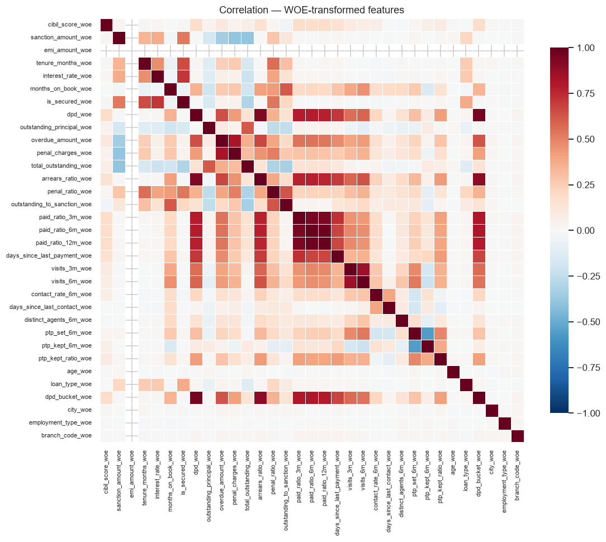
WOE-space correlation after transformation.
Scaled at PDO 20, base score 600 at 50.0:1 odds (factor 28.853901, offset 487.122876). Points read higher = safer, the way a bureau score does, while the model’s probability reads higher = riskier. They are monotonic inverses; every evaluation below uses the probability.
| band | count | bad_rate | min_points | max_points |
|---|---|---|---|---|
| A | 12,635 | 0.4370 | 490 | 511 |
| B | 12,012 | 0.5340 | 477 | 489 |
| C | 17,492 | 0.6847 | 454 | 476 |
| D | 17,377 | 0.8404 | 422 | 453 |
| E | 10,484 | 0.9432 | 384 | 421 |
| feature | bin | count | event_rate | woe | coefficient | points |
|---|---|---|---|---|---|---|
| dpd | (-inf, 1.50) | 14,865 | 0.4549 | 0.9881 | -0.7975 | 139 |
| dpd | [1.50, 30.50) | 13,247 | 0.5715 | 0.5191 | -0.7975 | 128 |
| dpd | [30.50, 60.50) | 10,277 | 0.6824 | 0.0423 | -0.7975 | 117 |
| dpd | [60.50, 91.50) | 8,351 | 0.7631 | -0.3628 | -0.7975 | 108 |
| dpd | [91.50, 159.50) | 12,206 | 0.8491 | -0.9203 | -0.7975 | 95 |
| dpd | [159.50, inf) | 11,054 | 0.9338 | -1.8391 | -0.7975 | 74 |
| dpd | Special | 0 | 0.0000 | 0.0000 | -0.7975 | 116 |
| dpd | Missing | 0 | 0.0000 | 0.0000 | -0.7975 | 116 |
| cibil_score | (-inf, 533.50) | 5,905 | 0.8252 | -0.7451 | -0.6750 | 101 |
| cibil_score | [533.50, 592.50) | 12,252 | 0.7669 | -0.3837 | -0.6750 | 108 |
| cibil_score | [592.50, 647.50) | 16,305 | 0.7134 | -0.1048 | -0.6750 | 114 |
| cibil_score | [647.50, 699.50) | 13,837 | 0.6468 | 0.2021 | -0.6750 | 120 |
| cibil_score | [699.50, 731.50) | 5,520 | 0.5976 | 0.4115 | -0.6750 | 124 |
| cibil_score | [731.50, inf) | 6,423 | 0.5485 | 0.6125 | -0.6750 | 128 |
| cibil_score | Special | 0 | 0.0000 | 0.0000 | -0.6750 | 116 |
| cibil_score | Missing | 9,758 | 0.6899 | 0.0075 | -0.6750 | 116 |
| ptp_kept_ratio | (-inf, 0.45) | 12,326 | 0.8933 | -1.3179 | -0.4846 | 98 |
| ptp_kept_ratio | [0.45, 0.71) | 50,615 | 0.6640 | 0.1260 | -0.4846 | 118 |
| ptp_kept_ratio | [0.71, inf) | 7,059 | 0.5363 | 0.6615 | -0.4846 | 125 |
| ptp_kept_ratio | Special | 0 | 0.0000 | 0.0000 | -0.4846 | 116 |
| ptp_kept_ratio | Missing | 0 | 0.0000 | 0.0000 | -0.4846 | 116 |
| overdue_amount | (-inf, 1987.50) | 18,047 | 0.5345 | 0.6687 | -0.1430 | 119 |
| overdue_amount | [1987.50, 3802.50) | 14,933 | 0.6381 | 0.2399 | -0.1430 | 117 |
| overdue_amount | [3802.50, 5052.50) | 6,912 | 0.6992 | -0.0364 | -0.1430 | 116 |
| overdue_amount | [5052.50, 8877.00) | 12,539 | 0.7577 | -0.3331 | -0.1430 | 115 |
| overdue_amount | [8877.00, 15876.00) | 9,212 | 0.8211 | -0.7167 | -0.1430 | 113 |
| overdue_amount | [15876.00, inf) | 8,357 | 0.8772 | -1.1593 | -0.1430 | 111 |
| overdue_amount | Special | 0 | 0.0000 | 0.0000 | -0.1430 | 116 |
| overdue_amount | Missing | 0 | 0.0000 | 0.0000 | -0.1430 | 116 |
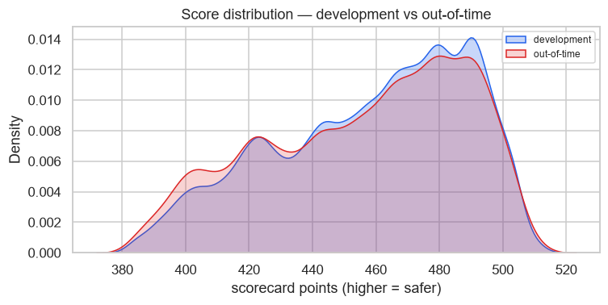
| Sample | n | Bad rate | Gini | KS | Top-decile lift | Breaks |
|---|---|---|---|---|---|---|
| Train | 70,000 | 0.6915 | 0.4857 | 37.13 | 1.38 | 0 |
| Validation | 20,000 | 0.6979 | 0.5041 | 38.72 | 1.37 | 0 |
| Out-of-time | 30,000 | 0.7175 | 0.5136 | 39.72 | 1.33 | 0 |
| Challenger (GBM, oot) | 30,000 | 0.7175 | 0.5143 | 39.86 | 1.33 | 0 |
| decile | count | events | non_events | bad_rate | lift | min_score | max_score | mean_score | cum_events | cum_count | cum_bad_rate | cum_pct_events | cum_pct_non_events | ks | woe |
|---|---|---|---|---|---|---|---|---|---|---|---|---|---|---|---|
| 1.0000 | 3,000.0000 | 2,869.0000 | 131.0000 | 0.9563 | 1.3328 | 0.9424 | 0.9745 | 0.9580 | 2,869.0000 | 3,000.0000 | 0.9563 | 0.1333 | 0.0155 | 11.7822 | -2.1543 |
| 2.0000 | 3,000.0000 | 2,787.0000 | 213.0000 | 0.9290 | 1.2947 | 0.9075 | 0.9424 | 0.9242 | 5,656.0000 | 6,000.0000 | 0.9427 | 0.2628 | 0.0406 | 22.2157 | -1.6392 |
| 3.0000 | 3,000.0000 | 2,660.0000 | 340.0000 | 0.8867 | 1.2357 | 0.8569 | 0.9075 | 0.8818 | 8,316.0000 | 9,000.0000 | 0.9240 | 0.3863 | 0.0807 | 30.5606 | -1.1249 |
| 4.0000 | 3,000.0000 | 2,542.0000 | 458.0000 | 0.8473 | 1.1809 | 0.7917 | 0.8569 | 0.8224 | 10,858.0000 | 12,000.0000 | 0.9048 | 0.5044 | 0.1348 | 36.9648 | -0.7816 |
| 5.0000 | 3,000.0000 | 2,312.0000 | 688.0000 | 0.7707 | 1.0740 | 0.7165 | 0.7914 | 0.7530 | 13,170.0000 | 15,000.0000 | 0.8780 | 0.6118 | 0.2160 | 39.5864 | -0.2798 |
| 6.0000 | 3,000.0000 | 2,082.0000 | 918.0000 | 0.6940 | 0.9672 | 0.6486 | 0.7165 | 0.6828 | 15,252.0000 | 18,000.0000 | 0.8473 | 0.7085 | 0.3243 | 38.4252 | 0.1134 |
| 7.0000 | 3,000.0000 | 1,858.0000 | 1,142.0000 | 0.6193 | 0.8631 | 0.5820 | 0.6486 | 0.6153 | 17,110.0000 | 21,000.0000 | 0.8148 | 0.7949 | 0.4591 | 33.5802 | 0.4455 |
| 8.0000 | 3,000.0000 | 1,704.0000 | 1,296.0000 | 0.5680 | 0.7916 | 0.5220 | 0.5820 | 0.5504 | 18,814.0000 | 24,000.0000 | 0.7839 | 0.8740 | 0.6120 | 26.2023 | 0.6586 |
| 9.0000 | 3,000.0000 | 1,451.0000 | 1,549.0000 | 0.4837 | 0.6741 | 0.4544 | 0.5220 | 0.4861 | 20,265.0000 | 27,000.0000 | 0.7506 | 0.9414 | 0.7948 | 14.6636 | 0.9976 |
| 10.0000 | 3,000.0000 | 1,261.0000 | 1,739.0000 | 0.4203 | 0.5858 | 0.3077 | 0.4544 | 0.4045 | 21,526.0000 | 30,000.0000 | 0.7175 | 1.0000 | 1.0000 | 0.0000 | 1.2537 |
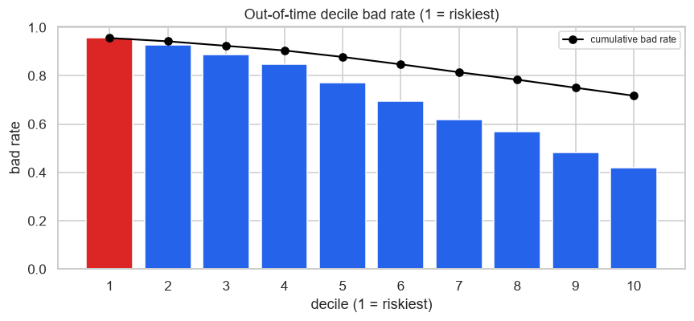
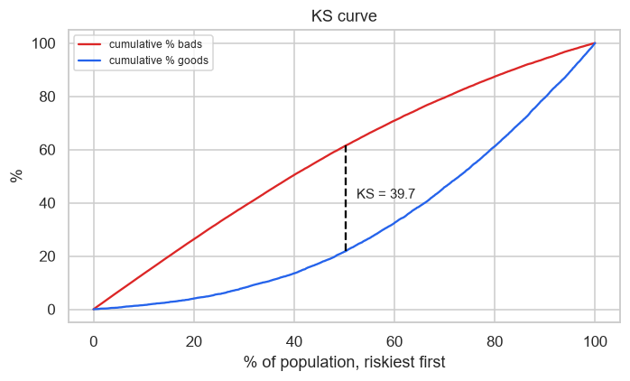
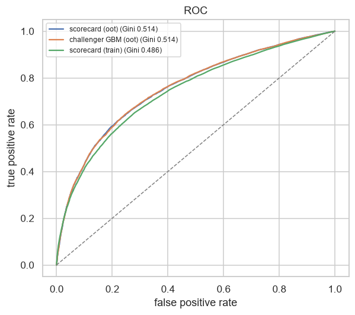
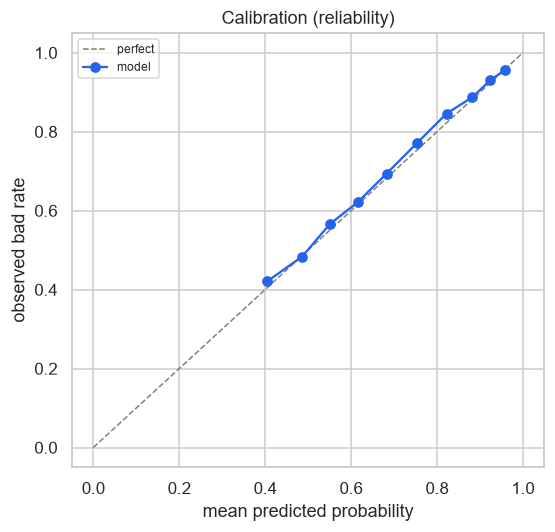
| band | count | observed | predicted | gap |
|---|---|---|---|---|
| 1.0000 | 3,000.0000 | 0.4207 | 0.4045 | -0.0162 |
| 2.0000 | 3,000.0000 | 0.4837 | 0.4861 | 0.0025 |
| 3.0000 | 3,000.0000 | 0.5657 | 0.5504 | -0.0153 |
| 4.0000 | 3,000.0000 | 0.6213 | 0.6153 | -0.0060 |
| 5.0000 | 3,000.0000 | 0.6940 | 0.6828 | -0.0112 |
| 6.0000 | 3,000.0000 | 0.7707 | 0.7530 | -0.0176 |
| 7.0000 | 3,000.0000 | 0.8460 | 0.8224 | -0.0236 |
| 8.0000 | 3,000.0000 | 0.8870 | 0.8818 | -0.0052 |
| 9.0000 | 3,000.0000 | 0.9303 | 0.9242 | -0.0061 |
| 10.0000 | 3,000.0000 | 0.9560 | 0.9580 | 0.0020 |
| decile | count | events | non_events | bad_rate | lift | min_score | max_score | mean_score | cum_events | cum_count | cum_bad_rate | cum_pct_events | cum_pct_non_events | ks | woe |
|---|---|---|---|---|---|---|---|---|---|---|---|---|---|---|---|
| 1.0000 | 7,000.0000 | 6,678.0000 | 322.0000 | 0.9540 | 1.3796 | 0.9329 | 0.9745 | 0.9532 | 6,678.0000 | 7,000.0000 | 0.9540 | 0.1380 | 0.0149 | 12.3050 | -2.2249 |
| 2.0000 | 7,000.0000 | 6,370.0000 | 630.0000 | 0.9100 | 1.3160 | 0.8924 | 0.9329 | 0.9141 | 13,048.0000 | 14,000.0000 | 0.9320 | 0.2696 | 0.0441 | 22.5475 | -1.5065 |
| 3.0000 | 7,000.0000 | 5,978.0000 | 1,022.0000 | 0.8540 | 1.2350 | 0.8341 | 0.8924 | 0.8639 | 19,026.0000 | 21,000.0000 | 0.9060 | 0.3931 | 0.0914 | 30.1649 | -0.9592 |
| 4.0000 | 7,000.0000 | 5,551.0000 | 1,449.0000 | 0.7930 | 1.1468 | 0.7702 | 0.8341 | 0.8045 | 24,577.0000 | 28,000.0000 | 0.8778 | 0.5077 | 0.1585 | 34.9228 | -0.5360 |
| 5.0000 | 7,000.0000 | 5,126.0000 | 1,874.0000 | 0.7323 | 1.0590 | 0.7020 | 0.7702 | 0.7360 | 29,703.0000 | 35,000.0000 | 0.8487 | 0.6136 | 0.2453 | 36.8347 | -0.1991 |
| 6.0000 | 7,000.0000 | 4,644.0000 | 2,356.0000 | 0.6634 | 0.9594 | 0.6411 | 0.7020 | 0.6702 | 34,347.0000 | 42,000.0000 | 0.8178 | 0.7096 | 0.3544 | 35.5188 | 0.1285 |
| 7.0000 | 7,000.0000 | 4,160.0000 | 2,840.0000 | 0.5943 | 0.8594 | 0.5726 | 0.6411 | 0.6051 | 38,507.0000 | 49,000.0000 | 0.7859 | 0.7955 | 0.4859 | 30.9617 | 0.4254 |
| 8.0000 | 7,000.0000 | 3,741.0000 | 3,259.0000 | 0.5344 | 0.7729 | 0.5131 | 0.5726 | 0.5442 | 42,248.0000 | 56,000.0000 | 0.7544 | 0.8728 | 0.6368 | 23.5988 | 0.6692 |
| 9.0000 | 7,000.0000 | 3,284.0000 | 3,716.0000 | 0.4691 | 0.6784 | 0.4537 | 0.5131 | 0.4820 | 45,532.0000 | 63,000.0000 | 0.7227 | 0.9406 | 0.8089 | 13.1756 | 0.9307 |
| 10.0000 | 7,000.0000 | 2,873.0000 | 4,127.0000 | 0.4104 | 0.5935 | 0.3077 | 0.4537 | 0.4042 | 48,405.0000 | 70,000.0000 | 0.6915 | 1.0000 | 1.0000 | 0.0000 | 1.1693 |
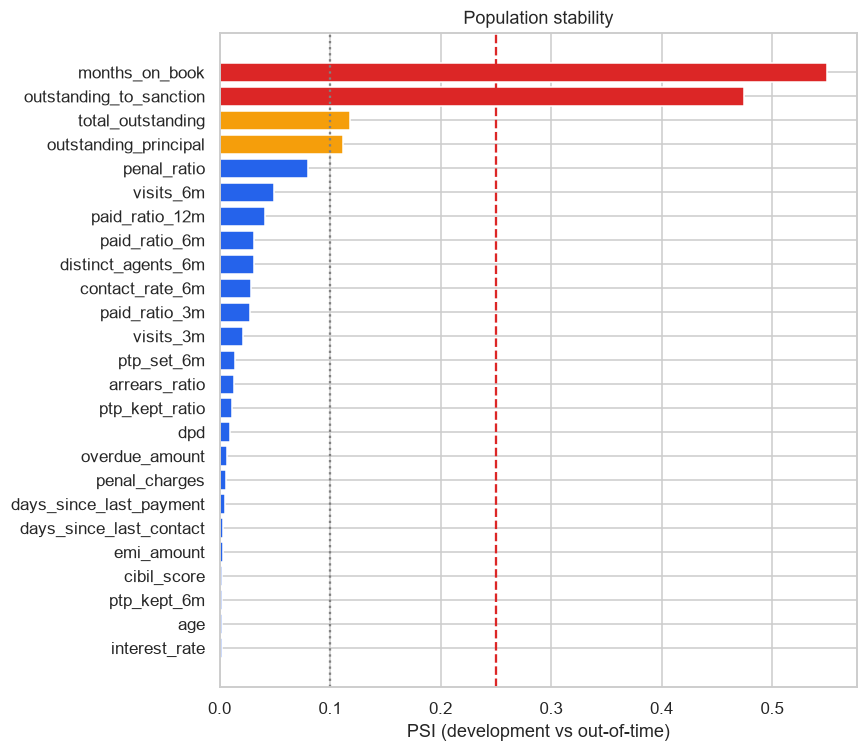
| feature | psi | verdict | in_model |
|---|---|---|---|
| months_on_book | 0.5497 | shifted | False |
| outstanding_to_sanction | 0.4745 | shifted | False |
| total_outstanding | 0.1182 | watch | False |
| outstanding_principal | 0.1122 | watch | False |
| penal_ratio | 0.0798 | stable | False |
| visits_6m | 0.0490 | stable | False |
| paid_ratio_12m | 0.0408 | stable | False |
| paid_ratio_6m | 0.0313 | stable | False |
| distinct_agents_6m | 0.0312 | stable | False |
| contact_rate_6m | 0.0284 | stable | False |
| paid_ratio_3m | 0.0273 | stable | False |
| visits_3m | 0.0217 | stable | False |
| ptp_set_6m | 0.0139 | stable | False |
| arrears_ratio | 0.0127 | stable | False |
| ptp_kept_ratio | 0.0111 | stable | True |
| dpd | 0.0095 | stable | True |
| overdue_amount | 0.0071 | stable | True |
| penal_charges | 0.0060 | stable | False |
| days_since_last_payment | 0.0048 | stable | False |
| days_since_last_contact | 0.0036 | stable | False |
| emi_amount | 0.0028 | stable | False |
| cibil_score | 0.0026 | stable | True |
| ptp_kept_6m | 0.0023 | stable | False |
| age | 0.0022 | stable | False |
| interest_rate | 0.0019 | stable | False |
| sanction_amount | 0.0016 | stable | False |
| tenure_months | 0.0012 | stable | False |
| is_secured | 0.0000 | stable | False |
| loan_type | shifted | False | |
| dpd_bucket | shifted | False |
showing 30 of 33 rows; the full table is in the CSV beside this document.
Score PSI, development against out-of-time: 0.0075.
| dimension | segment | n | bad_rate | gini | gated |
|---|---|---|---|---|---|
| dpd_bucket | NPA | 10,751 | 0.9092 | 0.3083 | False |
| dpd_bucket | CURRENT | 5,979 | 0.4633 | 0.1257 | False |
| dpd_bucket | BUCKET_1 | 5,590 | 0.5826 | 0.1583 | False |
| dpd_bucket | BUCKET_2 | 4,281 | 0.7052 | 0.1262 | False |
| dpd_bucket | BUCKET_3 | 3,399 | 0.7958 | 0.1854 | False |
| loan_type | PERSONAL | 7,553 | 0.7146 | 0.5282 | True |
| loan_type | CREDIT_CARD | 4,461 | 0.7093 | 0.5024 | True |
| loan_type | AUTO | 3,920 | 0.7227 | 0.4953 | True |
| loan_type | BUSINESS | 3,617 | 0.7346 | 0.5302 | True |
| loan_type | GOLD | 3,492 | 0.7085 | 0.5040 | True |
| loan_type | HOME | 2,754 | 0.7208 | 0.5078 | True |
| loan_type | MICROFINANCE | 2,313 | 0.7047 | 0.4903 | True |
| loan_type | EDUCATION | 1,890 | 0.7333 | 0.5361 | True |
| city | Delhi | 9,023 | 0.7200 | 0.5260 | True |
| city | Gurugram | 7,288 | 0.7205 | 0.5168 | True |
| city | Noida | 6,726 | 0.7244 | 0.4872 | True |
| city | Faridabad | 3,585 | 0.7208 | 0.5193 | True |
| city | Ghaziabad | 3,378 | 0.6874 | 0.5136 | True |
| Bootstrap Gini (out-of-time) | 0.5136 95% CI [0.502, 0.525] over 300 resamples |
| Adversarial validation AUC | 0.7491 — different populations |
AUC near 0.5 means development and out-of-time look like the same book. Above 0.70 the out-of-time result is measuring transfer across a shift as much as it is measuring skill.
| feature | gini_real | gini_time_shuffled | retention | note |
|---|---|---|---|---|
| dpd | 0.4558 | 0.0023 | 0.0050 | |
| overdue_amount | 0.3235 | 0.0052 | 0.0160 | |
| ptp_kept_ratio | 0.2102 | 0.0007 | 0.0030 | |
| cibil_score | 0.1969 | 0.0003 | 0.0020 |
| removed | gini | delta |
|---|---|---|
| dpd | 0.4274 | -0.0876 |
| ptp_kept_ratio | 0.5033 | -0.0116 |
| cibil_score | 0.5042 | -0.0108 |
| overdue_amount | 0.5149 | -0.0001 |
| (none — full model) | 0.5149 | 0.0000 |
scripts/build_modelling_dataset.py
--sweep — and it was set to land in a realistic band, not discovered
there.